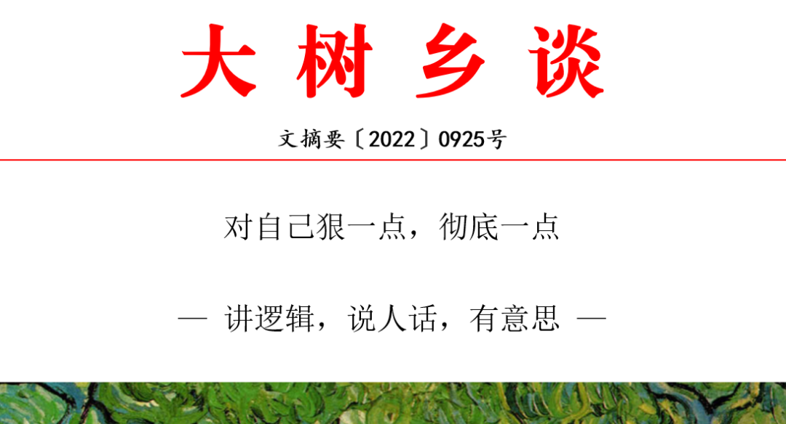

谋定则动，只争朝夕

长期以来，经常有朋友就一些困惑的事情询问小镇的看法，情况各不相同，但有一个共性就是面临困境，需要改变，但是不知道自己应该做什么，还有的朋友想来想去选择了一条最差的路。今天分享一个通用的解决方法，也是小镇这几年一直用的，实践证明确实有效。小镇一致认为“谋定则动”，在想不清楚的时候盲目动作，甚至用力过猛，很有可能得不偿失，更浪费宝贵的时间、精力、机遇，等到发现不对的时候，就很难再调整了。但是想要想清楚是一件非常难的事，主要有两点：一是缺乏足够的信息积累，自己的认知达不到一定层次，根本没有思考的土壤，面对信息和思维的局限性，很难把握准确的方向。 二是觉得想清楚了，但是做的时候缺乏动力，要么总是想着以后再努力，要么轻易改变自己的努力方向，犹犹豫豫，诸事不成。第一个比如高考之后选择城市、大学、专业，大多数情况下只能靠父母指导，但是现实来看，大多数家长没有能力指导孩子，先不说未必知道当今社会需要什么、未来需要什么，单单对不同城市、不同孩子的情况选择对应的大学或者专业就非常难，于是出现了很多盲从的现象，不少孩子考的分数还不错，但就因为志愿填报失误大打折扣。
小镇近20年前上的大学，那时候特别流行上经济、管理类等专业，小镇也读了一个挺万金油的专业，仔细想想几年下来其实没学到什么独特的东西，幸好当年就业还没那么卷，有太多的机会，如果放在现在，情况就截然不同了。至于第二种情况就太普遍了。举几个例子吧，小镇刚到北京的时候，有同事就一直说自己当年在某企业如何如何，说咱们几个去外面搞个公司吧，然后怎样怎样。小镇相信他如果离开体制，在另一条人生路上未必比现在差，但是说了小十年了，仍然待在体制内，只不过马上正处了。
又比如自媒体，小镇用了3年时间，现在勉强入门了，但小镇开始的时候完全没经验，打磨了很久，才慢慢找到了自己和读者都能接受的模式。其实小镇周围也有一些朋友想要搞自媒体，他们也认同自媒体确实可以形成良好的职业搭配，对于个人能力锻炼确有实效，但是想法很多，实践太少，说了很多年了，目前看唯一行动并且坚持超过半年的也就是小镇了。至于更普遍的那就太多了，比如励志开始健身、决心背3000个单词，又或者考一个证书，每周看一本书等等，能坚持2周的有多少呢？ 上面提到的无论是换一条人生路、开拓新的职业方向又或者开始一个领域的努力，方向都是对的，小镇也相信做出决定的时候也想清楚了，坚持下去相信也一定有收获，但为什么极少有人能坚持下去呢？ 小镇觉得，还是在思考也就是“谋”的阶段出了问题，不够彻底、不够坚决、不够用力，执行的时候不够坚定。小镇经常参与或者旁听会议，中国讲“民主集中制”，通过会议完成决策和思想的统一。
会议也是有组织纪律的，那就是开会要求发言提意见的时候，如果有意见一定要提，如果不提，那么当会议通过决议之后，就必须服从“少数服从多数”的原则，无条件100%的执行会议决议。很多人觉得中国的决策是领导一言堂，其实是错觉，因为提意见、博弈的过程发生在决议之前，目的就是在决策之前充分讨论，把“谋”尽可能落实。如果有人在该提意见的时候不提意见，会议决定之后，行动上瞻前顾后、扭扭捏捏、满腹牢骚，那就违背了组织纪律。把党和政府通过会议进行决策并执行决策的过程，与我们个人相对比，道理是类似的。当我们面对现状，思考未来应该怎么走、如何破局、如何打破迷茫的时候，就一定要深思熟虑，把问题想清楚、想透，这时候如果不重视思考，就想着“得赶快行动”“没时间了”，然后非常草率了决定要做什么，等到要执行的时候大概率要出问题。
另一个方面，如果深思熟虑之后，把事情想透了，那么到了执行阶段，一定会遇到各种意料之外的问题和困难，这时候只要没有大幅超越事先的思考，就一定先坚决的走下去，先走走看，硬顶着把事往前推进，等有了更深的认知，再根据新的情况思考未来如何调整，而不能轻率的半途而废，如果这样还是思考不够彻底、内心不够坚定。所以，这个世界大多数与人生方向有关的事情，没有多少需要在短短的几分钟内就定下来，如果有的话也不用后悔了，也只能指望运气。对于大多数事情，一定先慢下来，给自己一个专门的时间，比如集中一个下午加一个晚上，最起码几个小时，把这件事无限穷举，什么时候想清楚了或者想到一个临界点，再停止，在此期间别的就别干了。
一定要把思考做得彻底，用最大的力气，反复思考，把自己的纠结想透彻。当然在实践中，由于信息和认知的不足，很多事情确实想不到，但我们已经进入信息社会了，有太多的经验教训，有太多人曾经面对类似的问题，再也不需要像过去那样需要询问身边人，只要有网络，只要自己真正希望解决困惑，就一定有办法。比如可以去各种平台搜索，百度、知乎、小红书、豆瓣、微博、水木论坛甚至公众号等等，什么都可以，先大量获取信息，然后再对比去伪存真。除了搜索，还可以询问更有经验的人，比如通过搜索，觉得某人在这方面更有经验，那就大胆的留言询问，不用在意会不会打扰对方、对方能不能看到、回复与否，先去大胆的问。
其实小镇建议这时候没必要太在乎小钱，在自己面临迷茫的时候，如果能够通过简单的付费就能得到有用的经验，这本就是赚了。但是需要提醒一下，有一些人就是利用这种焦虑，大肆骗钱，一定要特别警惕，一般来说可以看看金钱额度，如果对方要价太高就要警惕了，毕竟有经验的人其实还是乐于分享的。小镇就曾经有过很困扰的问题，但是又没法跟身边人沟通，于是小镇就通过各种搜索，确定了几位曾经有相关经验并且成功解决的人，有的社会地位颇高，然后小镇就通过各种社交平台给对方留言，把问题一次性说清楚，态度情真意切，也确实得到了回应。
不过，事物具有两面性，思考非常重要，但是如果老是在思考，就是不行动那也不对。因为世界是复杂、变化的，任何人闭门造车的思考也不可能完美的模拟现实，很多经验教训也一定要在实践中才能获得。 “谋定”绝不是把一切都想清楚，而是要深刻的思考未来的方向，可能有效的措施以及排除掉大概率不行的方向，然后就先动起来。就像健身跑步一样，没有必要还没开始就各种学习什么跑姿最佳、什么时间运动最好、买什么鞋子什么装备等等，先跑起来，循序渐进，跑着跑着自然就懂了。
凡事都要讲一个度。总结一下，当人生遇到迷茫的时候，千万不要莽动，一定要重视思考，尽可能搜集信息、请教其他人，然后拿出专门的时间，使劲想、用力想，一定要想到自己目前阶段的极限。思考之后，要么觉得自己想透了，那再好不过，想透了就抓紧行动；也有可能无论怎么想都想不透，那也没关系，这说明自己目前的能力也就到这程度了，也没必要再纠结了，就先把自己想清楚地做起来，剩下的慢慢来。当然，道理不过如此，关键还是把道理应用于实践，当又一次成功的经历之后，剩下的路自然就好走了。
其他文章推荐
■ 经济如此困难，中国会重新刺激房地产吗？
如果喜欢，还请点赞、“在看”和关注吧 欢迎分享，让更多人发现“大树乡谈”